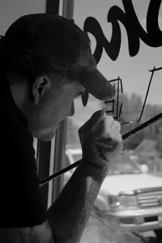

Biography
From the moment he entered the calligraphy scene, Skyler has been unforgettable. Covered in tattoos and clothed in a Britney Speark t-shirt, his quirky appearance coupled with insane talent made a strong impression on his fellow classmates at the 2012 IAMPETH convention in Milwaukee. However, his pursuit of calligraphy began years earlier.
During high school, Skyler began to study lettering on his own. Within a few years, his interest became an obsession. He became mesmerized by the lettering on children's books from the 1880s-1930s that he began to collect. Fueled with a strong desire to learn more, Skyler began saving for calligraphy classes and decided to venture outside of his hometown of Salt Lake City for more instruction. With hopes of finding a good teacher and visiting the Harrison collection at the San Francisco Library, he set out for the Bay Area. He did not know anyone there and even briefly lived on the streets. He never did find a teacher, but he did discover the Castle in the Air bookstore where he found calligraphy books from the early 20th century by the likes of Ames and Tamblin.
From there, his research led him to IAMPETH (the International Association of Master Penmen, Engrossers, and Teachers of Handwriting) online. Within the resources on the IAMPETH website, Skyler found his lettering home. He sacrificed his (and other people's) finances just to make it to Milwaukee, where the lettering artists welcomed him with open arms. In 2013, he received a scholarship to attend the IAMPETH convention in Albuquerque, where he found many outstanding teachers and fellow calligraphers willing to invest in helping him learn.
Skyler's style combines his love of traditional calligraphy with a strong talent for drawing. Heavily influenced by early American penman as well as sign writers and glass gilders, his classical work almost seems at odds with his idiosyncratic persona. Except actually it is not. His ability to embrace the unusual stoked his desire to sidestep more modern styles in favor of historic ones.
His commitment to study with the best has afforded him the opportunities to learn with experts such as calligrapher Michael Sull and glass embosser Dave Smith; however, he feels he owes special appreciation to teacher and Master Penman Harvest Crittenden for really helping him develop his skills. As his knowledge of lettering progressed, his interest in the tools to produce letters grew right alongside it. Often unable to find what he needed from traditional art supply sources, he employs unconventional, yet historic, tools such as the gentle, symmetrical arches of railroad curve templates.
Much of the work Skyler is attracted to has its roots in engraving, such as that found in bonds and certificates of the 19th century. The initial, detailed drawings were done with a precision drafting tool that is no longer available. He bought some vintage examples, and then worked with a friend to develop his own. The result is called the Line Wizard, a liner with a ratcheting system that can be dialed to ultra-precise line units, and made of metal instead of wood. It is now available to other artists who desire to perfect this traditional style of work.
Despite his love for all things traditional, Skyler simultaneously represents the future of calligraphy as well. His humble demeanor and offbeat style make him approachable; and because of his distinctive style and his commitment to perfecting his craft, Skyler appeals to a wider subset of young artists who are in turn being inspired to pursue lettering.
- Jennifer Allen, SCRIPSIT Vol. 42